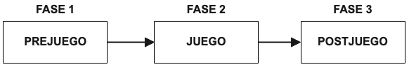
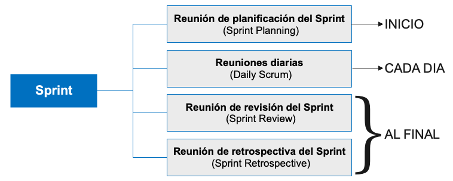
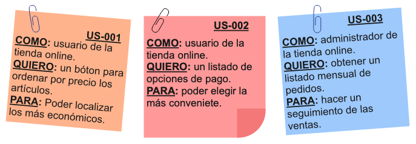
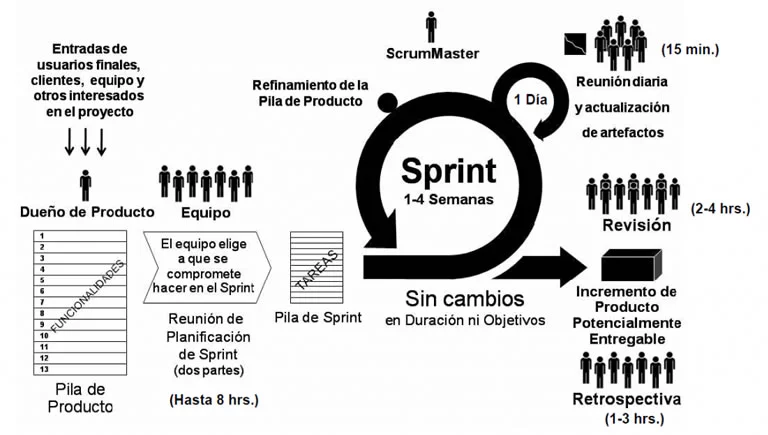

Tiene sus orígenes en el desarrollo de producto y está pensado para equipos de tamaño reducido.
Una manera de visualizar el proces sería:

Fase 1: se definen y analizan las funciones esperadas del sistema. ProductBacklog y SprintBacklog.
Fase 2: se distribuyen las tareas de desarrollo entre los miembros del equipo. Durante cada iteración se realiza un seguimiento del proceso mediante reuniones diarias cortas.
Fase 3: se evalua la entrega al final de cada iteracción. Esto se realiza durante la Revisión del Sprint, donde se analiza el incremento y se decide si se rechaza o acepta la entrega, y la Retrospectiva del Sprint, donde el equipo analiza el trabajo realizado y plantea posibilidades de mejora.
Scrum es un marco de trabajo para el desarrollo de productos complejos, que se centra en la administración iterativa del proceso de desarrollo, y no tanto en prácticas específicas.
Scrum se apoya en los 4 valores del manifiesto ágil y agrega otros 4 específicos.
Individuos e interacciones frente a procesos y herramientas
Los equipos se autoorganizan.
Resuelven problemas.
Tienen reuniones informales.
Software funcional frente a documentación excesiva
Estrategias al final de cada Sprint.
La documentación es una herramienta intermedia.
Colaboración con el cliente frente a la negociación contractual
El Product Owner representa al cliente y colabora con el equipo para maximizar el valor del producto.
Adaptación al cambio frente seguimiento de un plan
Es el responsable último del éxito del producto y su principal misión es maximizar la rentabilidad del producto, y para ello debe gestionar la lista de funcionalidades (Product Backlog).
Sus principales responsabilidades son:
Es un equipo multidisciplinar, consistente en un grupo de personas con las habilidades necesarias para transformar los requisitos del cliente en incrementos de desarrollo.
Son los que realmente construyen el producto.
Sus principales responsabilidades son:
Es la persona que gestiona el proceso Scrum, ayuda al equipo Scrum a mantenerse enfocado en los objetivos del proyecto y elimina los impedimentos que van apareciendo, para así poder entregar el máximo valor al cliente.
Es el documento fundamental que almacena los requisitos del proyecto, como una lista ordenada y priorizada de funcionalidades que mantiene el Product Owner.
Cada uno de los elementos de esta lista es un Product Backlog Item (PBI) y contienen una descripción, un orden y una estimación de complejidad.
El product Backlog se refina continuamente en colaboración con el equipo Scrum.
Está formada por el conjunto de PBI seleccionados al inicio de cada Sprint.
El equipo Scrum se encarga de su mantenimiento y su gestión.
Es el arranque de la planificación del Sprint.
Permite realizar el seguimiento de la evolución del Sprint.
Los PBI se descomponen en tareas específicas en el Sprint Backlog.
Consiste en cada uno de los periodos de duración fija, nunca superior a un mes, durante el cual se crea un incremento del producto terminado, utilizable y desplegable.
Durante el Sprint no se realizan cambios que puedan afectar al objetivo de ese Sprint.
Cada Sprint contiene cuatro eventos fundamentales:

En la planificación intervienen todos los roles y es el punto de partida de cada interacción.
En ella se establecen los compromisos entre el Product Owner y el Equipo Scrum sobre el alcance y características de la entrega que saldrá del Sprint.
Se divide en dos fases:
¿Qué puede hacerse en este Sprint?
Se parte del Product Backlog y el Product Owner propone los elementos del objetivo.
¿Cómo alcanzar el objetivo del Sprint?
Son unas reuniones breves (unos 15 minutos) que el Equipo Scrum y el Scrum Master realizan a diario al comienzo de la jornada.
Hay tres preguntas claves que deben responder los miembros del equipo:
Tiene por objetivo demostrar el incremento y obtener retroalimentación.
Participan el Equipo Scrum, el Product Owner y Stakeholders invitados por el Product Owner.
El resultado de esta reunión es la aceptación o rechazo de la entrega y la revisión del Product Backlog.
Es una reunión de caracter técnico realizada por el Equipo Scrum para analizar su trabajo y plantear posibilidades de mejora que se incluirán en el siguiente Sprint.
En Scrum, los requisitos se materializan en historias de usuario, que son uno de los elementos integrantes del Product Backlog que mantiene el Product Owner.
Podemos decir, que el Product Backlog contiene los Product Backlog Items, que son las historias de usuario.
La mejor manera de enunciar las historias de usuario es:
como <rol> quiero <funcionalidad o evento> para <beneficio>

Las historias de usuario han de ser INVEST:
Las historias de usuario o PBI se descomponen en tareas concretas más manejables y que pueden ser abordadas por desarrolladores específicos.
Las tareas han de ser SMART:

Lo primero de todo es la comunicación con los interesados en el proyecto, en el que recabaremos las características prioritarias para el cliente, recopilando una lista de funcionalidades que dan al cliente un valor de negocio.
En segundo lugar, el Product Owner se encargará de que las características correctas entren en el Product Backlog.
El tercer paso es la reunión de la planificación del Sprint, en el que el equipo Scrum analizará y planificará lo que se compromete a hacer en cada Sprint. De las cosas que se deciden incluir en el Sprint nace el Sprint Backlog.
Los sprints consisten en las unidades de trabajo necesarias para alcanzar los requerimientos del Sprint Backlog y que debe ajustarse a unos tiempos definidos (1 a 4 semanas). Durante el Sprint no se introducen cambios, así, se permite al equipo trabajar en un ambiente de corto plazo pero estable. Durante el Sprint, se realizan los Daily Scrum, unas reuniones diarias breves (unos 15 minutos), donde cada miembro del equipo cuenta los inconvenientes encontrados y buscan la manera de solucionarlos. Al final de cada Sprint se saca un incremento potencialmente entregable y se mantienen dos reuniones:
Reunión de revisión, donde mostraremos el incremento al Product Owner y Stakeholders invitados, donde se aceptará o rechazará la entrega.
Reunión de retrospectiva, donde el Equipo Scrum analizará su trabajo y planteará posibilidades de mejora que se introducirán en el siguiente Sprint.